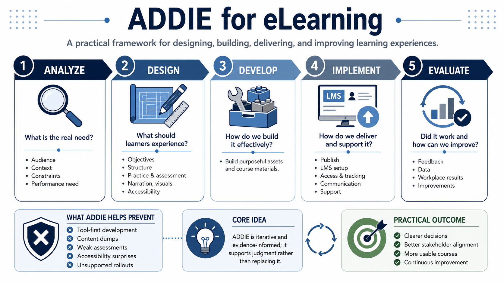

Course Summary and Key Takeaways
Connecting to LMS... Progress: in progress

Narration
ADDIE helps course creators move from a learning need to a designed experience, built materials, delivered course, and evaluated results. It gives the work a practical rhythm: analyze the problem, design the experience, develop the materials, implement the delivery, and evaluate what happened. Each phase answers a different kind of question.
Strong eLearning uses ADDIE to clarify the problem before creating screens. The Analyze phase identifies audience, context, constraints, and performance needs. The Design phase turns those findings into objectives, structure, practice, assessment, narration, visuals, and accessibility plans. The Develop phase builds purposeful assets instead of producing media for its own sake.
Implementation makes the course operational. It covers publishing, LMS configuration, learner access, tracking, communication, support, and rollout. Evaluation closes the loop by looking at feedback, data, workplace results, and improvement opportunities. A course is not truly finished just because it launches; it becomes more useful when evidence informs maintenance.
The goal is not to follow a template mechanically. The goal is to create courses that learners can understand, complete, apply, and improve from. ADDIE should support judgment, not replace it. Use it to ask better questions, make better decisions, and keep stakeholders aligned around learner outcomes.
A durable ADDIE practice is clear, iterative, and evidence-informed. It prevents tool-first development, content dumps, weak assessments, accessibility surprises, and unsupported rollouts. Most importantly, it keeps course creation focused on the learner and the real work the learner needs to perform.